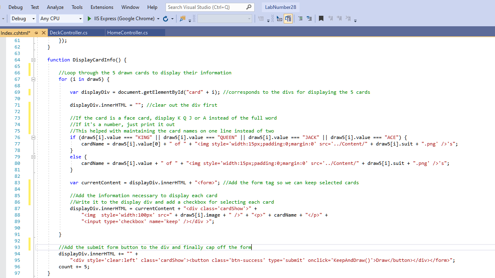

One of the projects we were assigned at Grand Circus was to find an api, any api, and we had one day to make a web application based around it. My team, being the silly nerds we are, decided to use a Star Wars api and build a simple app that let a user learn and discover things about the Star Wars universe and its characters by navigating some drop down lists. We had so much fun with this project, that I decided to go ahead and do it again on my own when I got home. Thus, this Card Deck api project was born, and it was indeed inspiration for the first application I made on my own after the bootcamp as well.
The first challenge was to find an api to work with. I wanted something that would give me a new challenge. The api we used in our class project allowed us to consume a lot of information, but we didn't really have a chance to communicate with the api for any other reason than retrieving that information. This made the deck of cards api, found at deckofcardsapi.com really appealing. You don't just get information to make a deck of cards from the api, you can also use it to shuffle those cards, create discard piles and insert cards into them, draw cards from your deck and list out the cards in each pile. There's a lot of fun stuff to play with here!
With challenge one out of the way, it was time to get started working - or was it? Here was an opportunity for another great challenge for myself. I had worked with integrating apis into a .NET project several times before, and had just started to learn javascript. So, why not learn how to integrate apis straight to the front end using Ajax? To accomplish this, I found a nice code-along tutorial here: Hackers and Slackers.
Making api calls in this way turned out to be fairly easy. Just decide on the method and data type, and plug in the url. Finally, call a function to manipulate the data if the request was successful. It is important to note, however, that this is perfectly acceptable for an api where security is not an issue, but this method is certainly not secure. The card deck api doesn't require any authentication or api keys when making a request, which subsequently made it a great api for a learning challenge of this nature. Because I didn't need to worry about security, I could focus on committing the syntax to memory, and figuring out what to do with it once I'd received the json data.